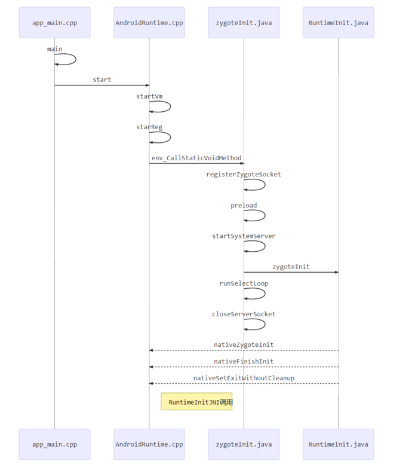

Zygote 学习
概述
- 本身是一个 Native 的应用过程，与驱动，内核无关
- 由init进程根据 init.rc 文件中的 init.rc 配置项创建,由linux的祖先init启动
作用
- 启动SystemServer
- 孵化应用进程
图示

zygote 分析
init.rc
1 | service zygote /system/bin/app_process -Xzygote /system/bin --zygote --start-system-server |
- 由上可知： init进程会创建一个
Zygote的进程，进程要执行的程序是system/bin/app_process,需要传递给app_process的参数。app_process其对应的源代码位于frameworks/base/cmds/app_process/app_main.cpp，
app_main.cpp
zygote 最初的名字叫做 app_process ，通过直接调用
pctrl改成了Zygote而 app_process 所对应的源文件是 App_main.cpp
1
2
3
4
5
6
7
8
9
10
11
12
13
14
15
16
17
18
19
20
21
22
23
24
25
26
27
28
29
30
31
32
33
34
35
36
37
38
39
40
41
42
43
44
45
46
47
48
49
50
51
52
53
54
55
56
57
58
59
60class AppRuntime : public AndroidRuntime
{
// 重载了 onStarted onExit onZygoteInit
......
}
/**
构造 AppRuntime 对象 ；
将 进程名 改为 zygote
调用 AppRuntime 对象的 start 方法 ，把工作 转给java 层的 ZygoteInit 类处理
*/
int main(int argc, char* const argv[])
{
......
// runtime 实际上就是 由 AndroidRuntime 派生出来的
AppRuntime runtime;
// Everything up to '--' or first non '-' arg goes to the vm
int i = runtime.addVmArguments(argc, argv);
// Parse runtime arguments. Stop at first unrecognized option.
......
while (i < argc) {
const char* arg = argv[i++];
if (!parentDir) {
parentDir = arg;
} else if (strcmp(arg, "--zygote") == 0) {
zygote = true;
niceName = "zygote";
} else if (strcmp(arg, "--start-system-server") == 0) {
startSystemServer = true;
} else if (strcmp(arg, "--application") == 0) {
application = true;
} else if (strncmp(arg, "--nice-name=", 12) == 0) {
niceName = arg + 12;
} else {
className = arg;
break;
}
}
// 将 进程名 修改为 zygote
if (niceName && *niceName) {
setArgv0(argv0, niceName);
set_process_name(niceName);
}
runtime.mParentDir = parentDir;
if (zygote) {
// start zygote 的实现
runtime.start("com.android.internal.os.ZygoteInit",
startSystemServer ? "start-system-server" : "");
} else if (className) {
// Remainder(剩余) of args get passed to startup class main()
runtime.mClassName = className;
runtime.mArgC = argc - i;
runtime.mArgV = argv + i;
runtime.start("com.android.internal.os.RuntimeInit",
application ? "application" : "tool");
......
}
AndroidRuntime.cpp
1 | //frameworks/base/core/jni/AndroidRuntime.cpp |
zygoteInit.java
registerZygoteSocket
- 创建一个服务socket 关于 zygote命令连接
- 用于 IPC 的 Socket
preload
- preloadClasses()
- 执行时间较长，这个是导致系统启动慢的主要原因，可以对此进行优化
- preloadResources()
- 加载framework-res.apk 中的资源
- preloadOpenGL()
- preloadClasses()
startSystemServer
- 创建Java 世界系统 Service 所驻留的进程 system_server，该进程是 framework 的核心
- 如果它死了，导致zygote自杀
runSelectLoop
- 处理客户端与客户的请求。其中客户在zygote中用的是Zygoteconnection对象来表示
- 客户的请求由ZygoteConnection 的 runOnce 来处理
closeServerSocket
RuntimeInit.java
- JNI 调用
- private static final native void nativeZygoteInit();
- private static final native void nativeFinishInit();
- private static final native void nativeSetExitWithoutCleanup(boolean exitWithoutCleanup);
小结
- 创建AppRuntime对象，并调用他得start。此后的活动规则将由AppRuntime来控制
- 调用startVm 创建 Java 虚拟机，然后调用 startReg 来注册 JNI 函数
- JNI 调用 ZygoteInit 进入Java
- 调用 regiesterZygoteSocket ,使它可以相应子孙后代的请求。同时zygote 调用 preload 函数
- zygote 通过调用 startSystemServer 函数分裂子进程 system_server 来为Java世界服务
- zygote完成Java的初始工作，然后调用 runSelectLoop ，直到接受到请求就会随时醒来进行服务
注意点
- Zygote fork要单线程
- Zygote的IPC没有采用binder，采取的是本地socket。也就是说应用程序的binder机制并不是由此继承的，而是应用程序进程创建之后自己启动的
疑问点
- 孵化应用为什么不交给SystemServer来做，而专门设计了Zygote？
- Zygote中启动了虚拟机，以及preload函数加载各种资源，在此处做好了较耗时的初始化操作，子线程在fork中就能直接共享
- Zygote为啥不采取binder机制？采取的话有什么问题？
- 简单而言就是Zygote与SystemServer是属于继承关系，没有必要使用想对复杂的binder机制。如果采取的话，SystemServer因为继承关系，得到了Zygote的binder信息，造成了数据公用
博客基于 Android版本 4.4.4_r1_KTU84P
- 本文链接：https://www.wl960127.top/posts/44872/
- 版权声明：本站内容均为个人学习笔记,不涉及商业用途，仅提供学习参考,第三方摘录已署名链接,未署名请评论添加,转载署名来源即可。
分享